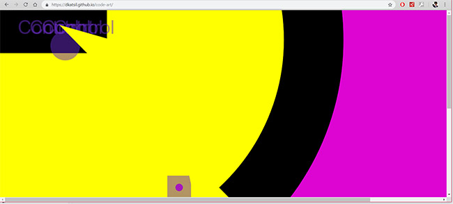
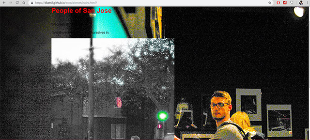

A Simple Goodbye Doesn't Leave from Demetri Katsilometes on Vimeo.
A Simple Goodbye Does Not Leave, iPhone 7 and Adobe Premiere, 2019
This final project, shot from iPhone 7 and constructed in Premiere, confronts the inner waves of change that have long been increasing. I have decided to follow my inner passion and pursue Photography instead of Digital Media, so this is an encapsulation of my body telling me that it is time to stop worrying about the status quo of grades and statistics, and go with what drives me to live.

A Mere Isolation of Personality, Photoshop & Atom/GitHub, 2019
Exploring the depths of my personality, through multiple links, featuring either my own photographs (edited with Lightroom) or image captures of nostalgic mementos. A fun, inner piece to continually expand on, and live a free existence. https://dkatsil.github.io/netart/
Dreams 2019 from Demetri Katsilometes on Vimeo.
Dreams 2019, iPhone 7 & Adobe Premiere, 2019
With increased nostalgia comes responsibility to retain composure, even when the dreams get hard to handle. A reality to dreamlike transition, shot on iPhone 7 and edited with Premiere Pro. I used an emergency blanket, which is quite loud.
Weekend Nostalgia Fix from Demetri Katsilometes on Vimeo.
Weekend Nostalgia Fix, iPhone 7 and Adobe Premiere
A February weekend trip home yields a wave of nostalgic experiences that ultimately triggers an internal change. Dominoes start to fall. San Jose time is running out, and one must make a decision while flooded with decoding nostalgic signals, in order to figure it out.
Mere Inches, Adobe Premier, 2018
Video for Intro to Digital Media. Reflects upon the unpredictable nature of a choice-filled life.
Untitled, Soundcloud, 2018
Encapsulated recollections from a past life.

Untitled (image), VSCO & Adobe Photoshop, 2018
Image taken in San Francisco on a foggy day. Edited to represent a recently discovered planet.

Circus Weekend, Adobe Photoshop, 2018
The twists and turns of life bring unexpected and life-altering decisions and events, etching themselves eternally in memory.

Born From Nothing, Audacity & VSCO, 2018
Where we come from and why we are here, ultimately, guides (if not controls) my life. The only way to channel some control is to represent the "simulation" aspect of life.
A Mere Isolation of Personality, Photoshop & Atom/GitHub, 2019
Exploring the depths of my personality. https://dkatsil.github.io/netart/

ImpendingTakeover, Javascript & Atom/GitHub, 2018
The inevitable surge is coming. https://dkatsil.github.io/code-art/

SanJoseExperience, Photoshop, Audacity, Github & Atom, 2018
A backup to what was planned. This backup is a photography compilation of mine, based on candid street shots.https://dkatsil.github.io/exquisitenet/